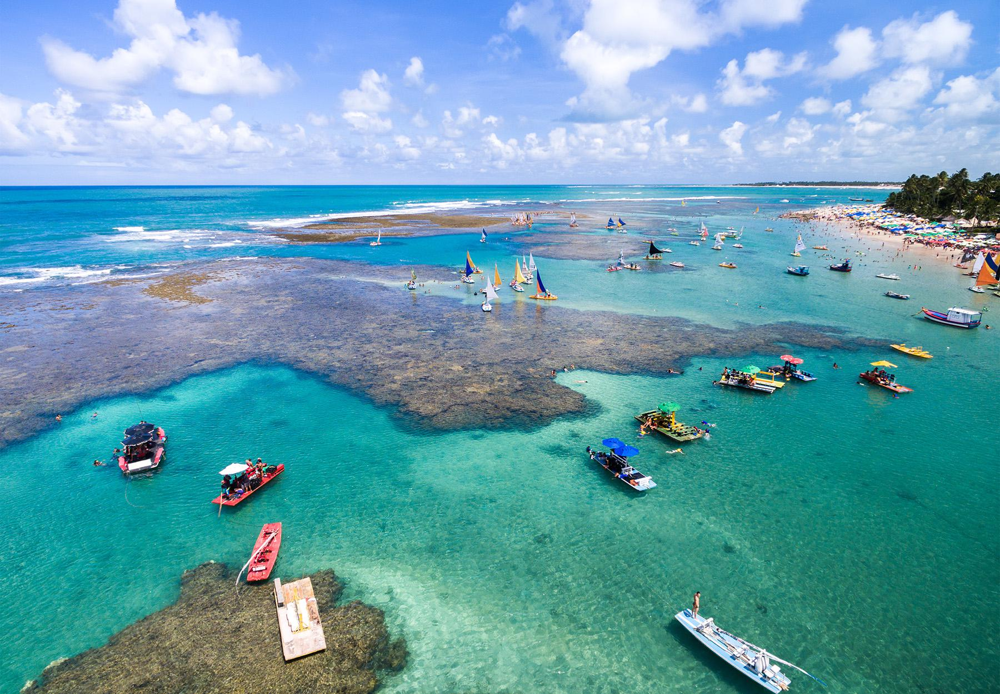

Um Pouco da História
Recife é uma das cidades mais antigas do Brasil e tem uma história rica e complexa
Origem
A cidade surgiu em 1537 como uma colônia de pescadores e ancoradouro, a partir do "Arrecife dos Navios", um lugarejo habitado por mareantes e pescadores. O nome Recife vem do recife de corais que protege a costa da cidade.Invasão holandesa
Em 1630, os holandeses invadiram e incendiaram Olinda, o centro da capitania, e se estabeleceram no Recife. A cidade foi a sede da colônia de Nova Holanda, administrada pelo conde Maurício de Nassau, e permaneceu sob domínio holandês por 24 anos.Urbanização
O período de domínio holandês marcou o início de um intenso processo de urbanização na cidade, que deixou marcas até hoje na paisagem.Comércio exterior
A economia de Recife sempre se baseou no comércio exterior e nas atividades portuárias.Porto Digital
No início do século XXI, Recife se preparou para sediar o Porto Digital, um porto de novas águas e novas tecnologias.Veneza Brasileira
Recife é conhecida como a “Veneza Brasileira” devido à sua grande quantidade de rios, pontes e ilhas.Hospital público
Recife foi a primeira cidade do Brasil a ter um hospital público, fundado em 1543.A Beleza Natural
Banhado pelo Oceano Atlântico, o Recife é um paraíso para os amantes do mar. Suas praias, como Boa Viagem e Porto de Galinhas, são famosas por suas águas mornas e paisagens deslumbrantes.

Cultura e Gastronomia
A cultura recifense é rica e diversificada, com influências indígenas, africanas e europeias. A cidade é um polo cultural, com diversos museus, teatros e centros de artesanato. A gastronomia local é um verdadeiro banquete para o paladar, com pratos como a moqueca, o bobó de camarão e o caldo de sururu.